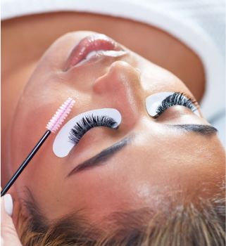

12 March 2024
In the bustling landscape of modern life, finding moments of tranquility and relaxation is essential for maintaining balance and well-being. A day spa offers a sanctuary where you can escape the stresses of everyday life and indulge in rejuvenating treatments that nurture both body and soul. However, with countless options available, selecting the right day spa can be a daunting task. To help you navigate this journey, we've compiled the top six tips for choosing a day spa that aligns with your needs and preferences.
1. Define Your Goals Before embarking on your quest for the perfect day spa, take a moment to clarify your objectives. Are you seeking relaxation, rejuvenation, or specific treatments for your skin or body? Understanding your goals will guide you in selecting a spa that offers the services and amenities that align with your desires.
2. Research Spa Services Once you've defined your goals, research spas in your area to explore the services they offer. Look for spas that provide a comprehensive range of treatments, from massages and facials to body wraps and holistic therapies. Consider whether the spa specializes in specific techniques or treatments that cater to your needs.
3. Assess Expertise and Credentials When choosing a day spa, it's essential to prioritize expertise and credentials. Research the qualifications and experience of the spa therapists and staff to ensure you receive high-quality care and personalized attention. Look for certifications, training, and reviews from satisfied clients to gauge the professionalism and expertise of the spa team.
4. Consider Atmosphere and Ambiance The ambiance of a day spa plays a significant role in creating a tranquil and relaxing experience. Pay attention to the atmosphere of the spa, from the décor and lighting to the music and aromatherapy scents. Choose a spa with a serene and inviting ambiance that promotes relaxation and rejuvenation.
5. Read Reviews and Recommendations Before booking your appointment, take the time to read reviews and recommendations from previous clients. Online platforms and social media channels provide valuable insights into the quality of service, cleanliness, and overall experience at the spa. Pay attention to both positive and negative feedback to make an informed decision.
6. Visit the Spa in Person To truly assess the suitability of a day spa, consider visiting in person before booking your appointment. Take a tour of the facility, observe the cleanliness and organization, and interact with the staff to gauge their professionalism and friendliness. Trust your intuition and choose a spa where you feel comfortable and welcomed.
By following these six tips, you can navigate the process of choosing a day spa with confidence and ease. Whether you're seeking relaxation, rejuvenation, or holistic wellness, the perfect spa experience awaits. Take the time to prioritize your well-being and treat yourself to the indulgent oasis of a day spa.